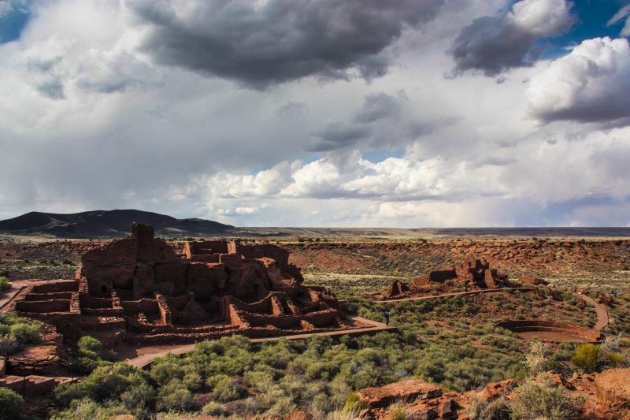
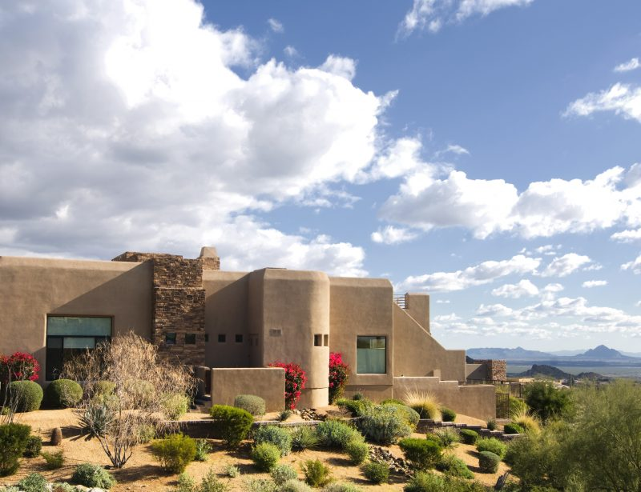
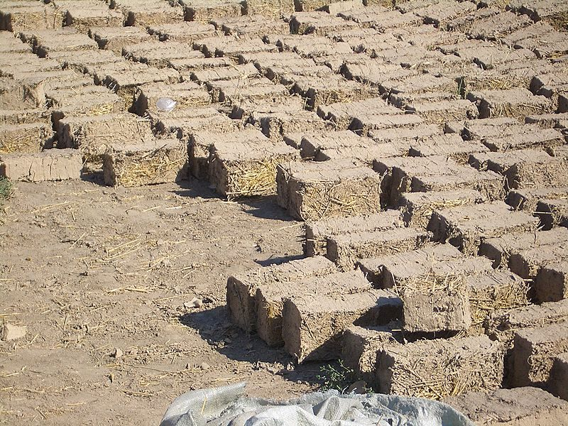
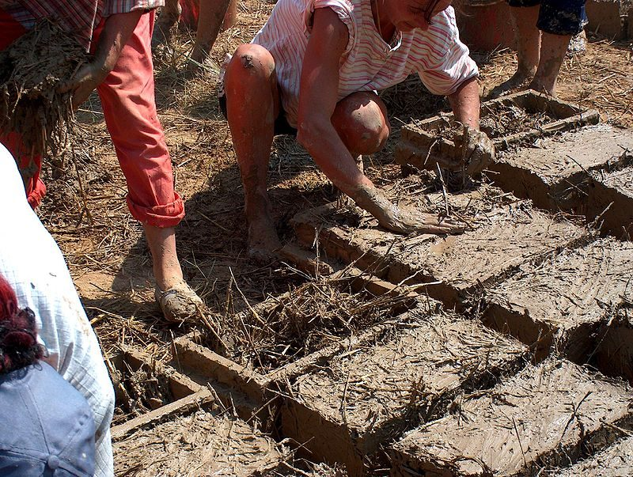
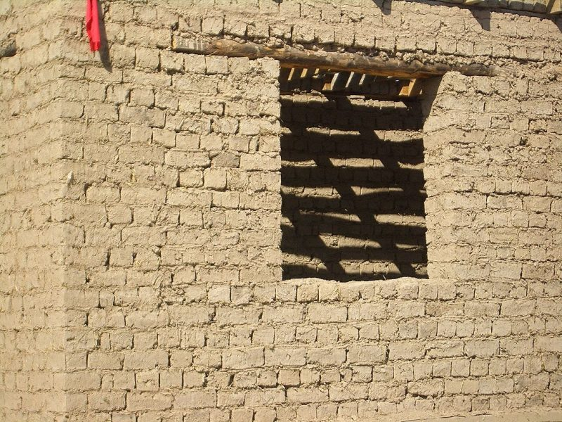
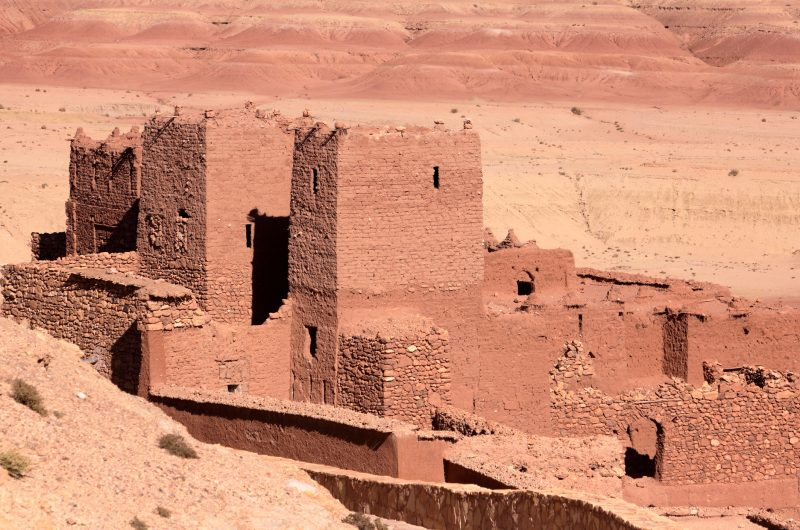
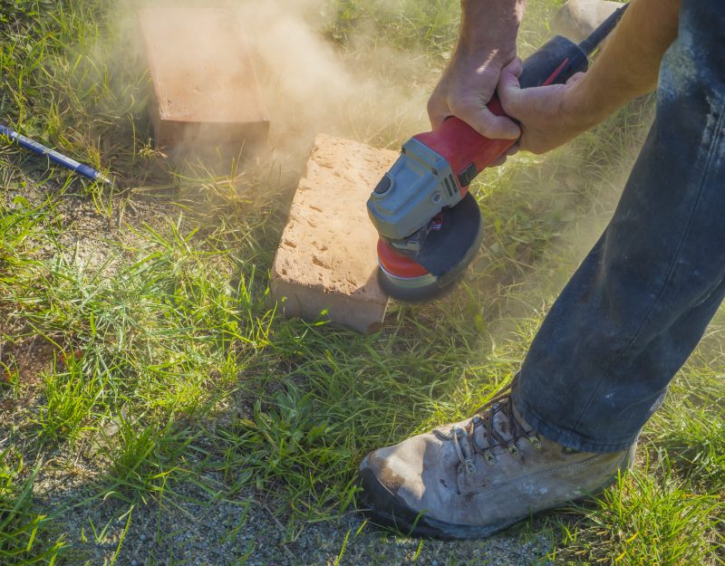

Adobe House
Normally, when anybody talks about building a survival shelter, they talk about building it out of wood. This makes sense in some parts of the country where are abundant forests; but what if you’re not in one of those parts of the country?
While there is still a lot of forested land throughout the United States, there are also parts, like the Southwest, where trees are scarce.
The USA has some very arid parts.
That’s why, throughout history, mankind has endeavored to use whatever materials nature has provided to build homes. From buffalo hides to blocks of ice, people have shown amazing ingenuity in the materials they have used and the homes they have built out of them.
In Northern Mexico and the Southeast United States, adobe was a common construction material for many years. The effectiveness of this building material has been proven by the fact that there are still adobe homes standing that are hundreds of years old. Granted, part of this is due to the lack of rainfall to destroy those homes, but that too is an indication of how the people of those regions adapted their building style to the environment in which they lived.
Southwestern adobe-style homes make great survival spots.
Adobe has some excellent building properties. The thick walls make an excellent thermal mass. This absorbs heat throughout the day and then releases it during the night. An adobe wall gathers that heat slowly, so the interior of the home stays cooler during the day, even without air conditioning, than comparable homes built with other materials.
Today, the same basic building style is still in use – especially in Mexico – although adobe bricks have been replaced by cinder blocks. Nevertheless, in an emergency situation where there would be the need to build a shelter out of available materials, adobe would still be a good choice.
Making Adobe Bricks
Adobe is a type of brick. However, it differs in a number of critical ways from the standard construction bricks that we might be familiar with. Adobe bricks are by no means factory-made bricks, but rather bricks made in a much more primitive way, as you will see. Nevertheless, they are quite effective.
One of the many differences between adobe and clay brick is the material. Clay bricks are 100% clay, whereas adobe bricks are made of clay-bearing soil, generally without any organic material from vegetation in it. It is essentially a low-grade clay that wouldn’t work if anyone tried to use it for pottery – anything they made would simply fall apart. This is prevented in adobe bricks by the addition of straw, but I’m getting ahead of myself.
Mixing mud and straw in brick frames.
A form or mold is needed. This is made of wood and is rectangular in shape. Typically, the form will make either two or four bricks at once depending on whether it is intended to be used by one person or two. There are even cases where large forms are used that can make as many as 20 bricks laid out in a grid, but these are very rare.
The bricks are typically about 10 x 14 inches in North America (they can vary considerably throughout Latin America) and are usually 3 ½ inches thick (the thickness of a 2″x 4″). This can and does vary from brickmaker to brickmaker, but each brickmaker will make their bricks consistent to make them easier to build with.
The mud/clay mixture is usually mixed in place by digging a wide, shallow hole to loosen up the clay and dirt mixture. Water is then poured into this and it is mixed to make a slurry about the same consistency as concrete. For large quantities of bricks, the traditional means of mixing is to walk in the mud rather than trying to mix it with a shovel or hoe.
Pieces of chopped straw (not hay) about four inches long are then added to the slurry and worked into it. This addition of straw is the key to the adobe’s strength. Without this addition, they would be nothing more than mud bricks, which can be broken up with the hand once dry. Adding the straw works the same as the fiber in fiberglass: it bonds the whole thing together and gives it strength. With the straw mixed in, the ready slurry should be stiff enough that a mound of it on a shovel won’t sag.
Adobe brick houses are easy to put up.
It’s amazing to think that they could have come up with this concept as far back as the bronze age, but they did. We’re talking about the same basic principles as modern composites, but the bricks are made from very simple and readily-available natural materials.
With the slurry mixed, the form is coated with water to help prevent slurry from sticking to it, and it is laid out on a flat area of packed earth. The slurry is then shoveled into it and packed in to remove air bubbles and smooth the surface, making it flat with the form. With the brick level, the form is removed and the brick is allowed to dry in the sun. It takes about a week for an adobe brick to dry fully.
Building with Adobe Bricks
With the bricks made, the construction of an adobe home is much like any other brick home. Today, a cement foundation is poured and the adobe walls are built onto it. However, in times past, concrete was not available for the foundation. Fortunately, the earth in the regions where adobe was used was typically hard-packed, forming an effective foundation. If it is not hard-packed, this needs to happen before walls can be erected as an adobe wall is quite heavy.
Fortunately, the earth in the regions where adobe was used was typically hard packed, forming an effective foundation.
The same sort of clay/mud slurry is used as a mortar when building with adobe, although the mix is slightly runnier and straw is not normally added. You could add straw for improved strength, but it would need to be very short pieces of straw (about an inch in length).
Door and window frames are made by cutting the bricks in half. This is normally done with a hatchet, sacrificing half of the brick in the process. A wood header beam needs to be added above a door or window opening. Traditionally, this is a solid beam squared from a tree trunk.
Door and window frames are made by cutting the adobe bricks in half.
Because adobe is made of unfired clay and earth, it is not waterproof. Two different techniques are used to protect adobe houses.
The first of these is to cover the building with plaster. This is a mixture of lime or gypsum, water, and sand. As with concrete, the lime or gypsum hardens through a chemical reaction and forms a durable coating. If there is not enough lime or gypsum available, clay may be added instead. In this case, the highest-grade clay available is used.
The second method of protection is to build a roof with large eaves and gable ends. This extra large overhang, especially on the side where the prevailing weather comes from, helps to keep rain off the walls so they don’t become damaged. Even so, it is not unusual to refinish adobe walls every few years by adding a new layer of plaster.